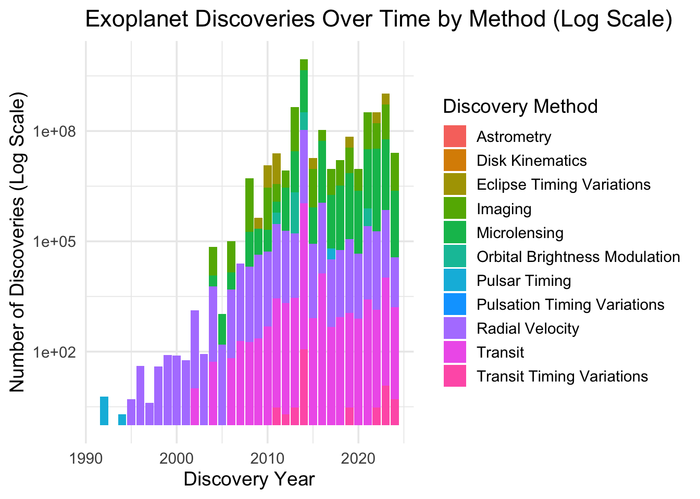
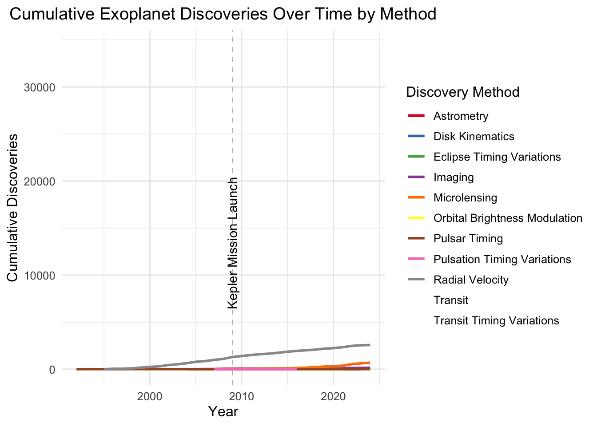
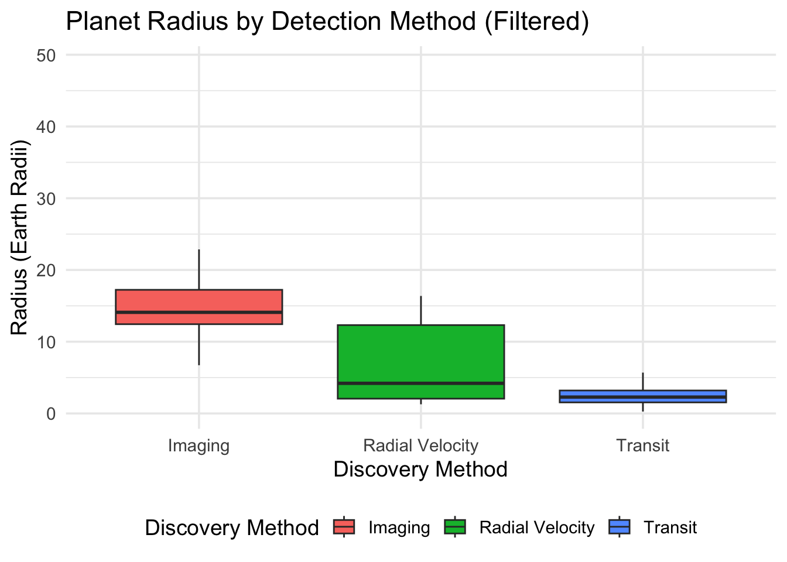
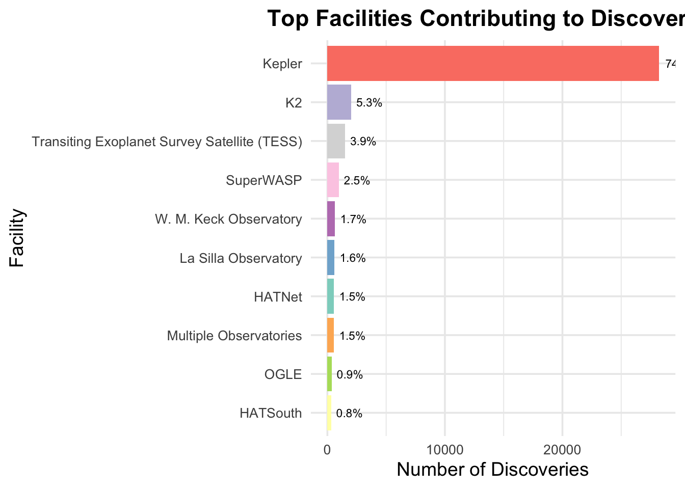
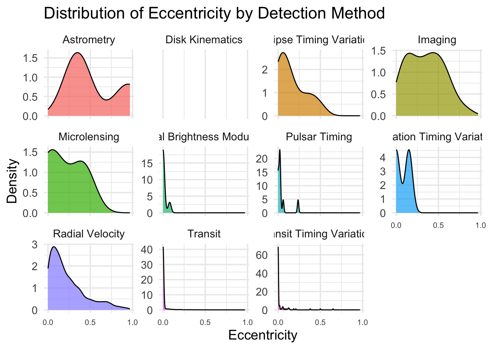
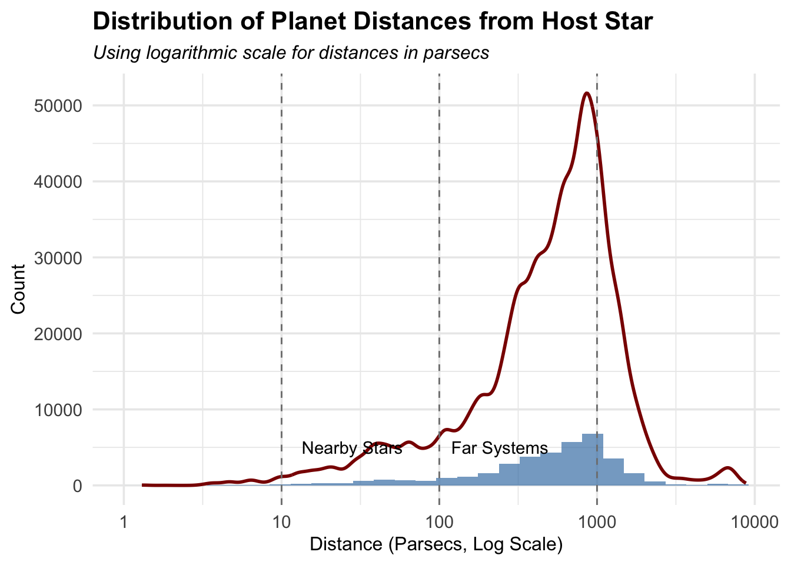
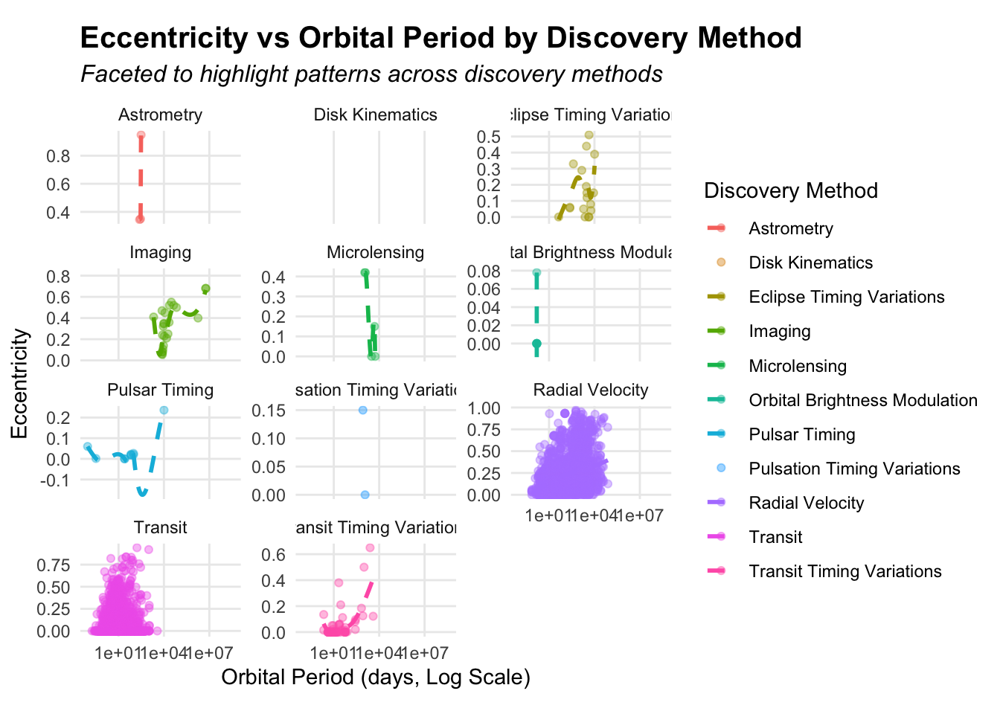
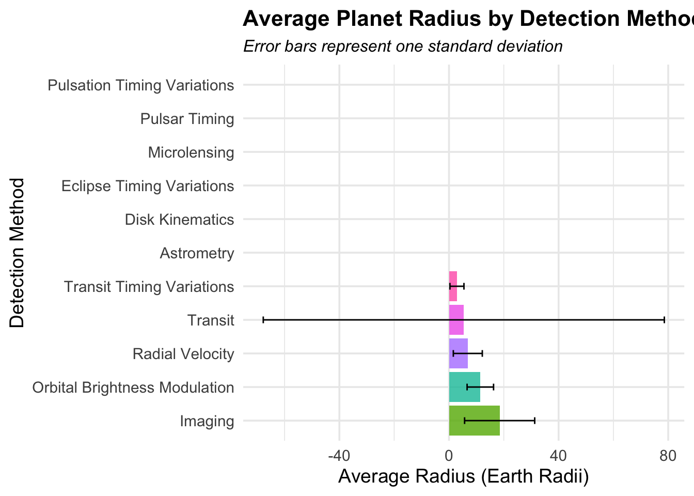
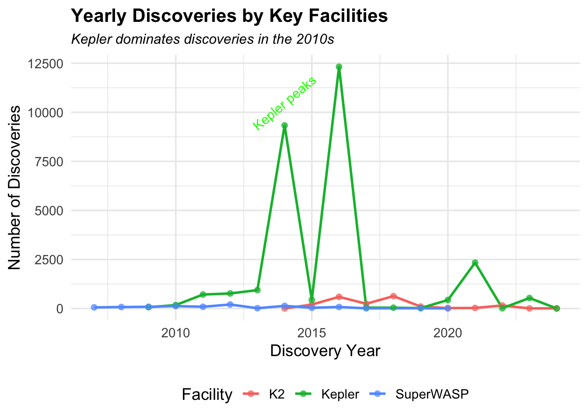

1. How have the contributions of different detection methods evolved over time, particularly following major astronomical missions like Kepler?
Code
ggplot(cleaned_data, aes(x = disc_year, fill = discoverymethod)) +geom_bar() +scale_y_log10() +labs(title ="Exoplanet Discoveries Over Time by Method (Log Scale)",x ="Discovery Year", y ="Number of Discoveries (Log Scale)",fill ="Discovery Method") +theme_minimal(base_size =14)

Summary: The chart illustrates how the use of different detection methods contributed to the discovery of exoplanets over time. Notably, the transit method and radial velocity have been dominant contributors, particularly after the Kepler mission’s launch in 2009, which significantly accelerated discoveries. This highlights the role of advanced space telescopes in exoplanet detection.
2.What are the trends in the number of exoplanet discoveries over time, and how do they vary across different detection methods?
Code
cumulative_data_by_method <- cleaned_data |>group_by(disc_year, discoverymethod) |>summarise(total_discoveries =n(), .groups ='drop') |>group_by(discoverymethod) |>mutate(cumulative_discoveries =cumsum(total_discoveries))# Plot cumulative discoveries with breakdown by methodggplot(cumulative_data_by_method, aes(x = disc_year,y = cumulative_discoveries,color = discoverymethod)) +geom_line(size =1) +labs(title ="Cumulative Exoplanet Discoveries Over Time by Method",x ="Year", y ="Cumulative Discoveries",color ="Discovery Method") +theme_minimal(base_size =12)+scale_color_brewer(palette ="Set1") +geom_vline(xintercept =2009, linetype ="dashed", color ="gray") +annotate("text",x =2009,y =5000,label ="Kepler Mission Launch",angle =90,hjust =-0.1) +theme(plot.title =element_text(hjust =0.5))

Summary: This cumulative plot illustrates the number of exoplanets discovered using various detection methods over time. The radial velocity and transit methods dominate, showcasing significant growth, particularly after the Kepler mission’s launch in 2009. Other techniques, such as microlensing and imaging, have contributed modestly. The plot highlights how advancements in specific methods and dedicated missions have accelerated discoveries.
3. What are the relative frequencies of different detection methods used in exoplanet discoveries?
Summary: This bar chart demonstrates the number of exoplanets discovered using various methods. Transit (method 10) overwhelmingly dominates, with over 34,000 discoveries. Radial velocity (method 9) comes next, followed by a combined “Other” category that includes less common methods. This emphasizes the prominence of transit detection in modern exoplanet studies, facilitated by missions like Kepler.
4. How does the distribution of planet radii vary across exoplanets discovered by different detection methods?
Code
filtered_data <- cleaned_data |>filter(discoverymethod %in%c("Transit", "Radial Velocity", "Imaging")) |>filter(pl_rade >0& pl_rade <50) # Include only reasonable radii# Plot boxplots with filtered dataggplot(filtered_data, aes(x = discoverymethod, y = pl_rade, fill = discoverymethod)) +geom_boxplot(outlier.shape =NA) +# Exclude outliers from plot#geom_jitter(alpha = 0.3, color = "black", size = 0.5, width = 0.2) + # Add jitter for datapointslabs(title ="Planet Radius by Detection Method (Filtered)",x ="Discovery Method", y ="Radius (Earth Radii)",fill ="Discovery Method") +theme_minimal(base_size =14) +theme(legend.position ="bottom")

Summary: This boxplot illustrates the range of exoplanet radii detected by three primary methods: Imaging, Radial Velocity, and Transit. Planets detected via imaging tend to have larger radii, with a median size around 15-20 Earth radii. Radial velocity captures a wide range of planet sizes, but generally larger than those found by transit. Transit discoveries predominantly detect smaller planets, with their radii clustered close to Earth’s size. This reflects the differing sensitivities of these methods: imaging excels at spotting large, distant planets, while transit focuses on smaller, close-in planets crossing their host stars.
5. Which astronomical facilities have contributed most significantly to exoplanet discoveries, and how do their contributions compare?
Code
facility_data <- cleaned_data |>count(disc_facility, sort =TRUE) |>mutate(percent = (n /sum(n)) *100) |>top_n(10, n) # Top 10 facilities# Create improved bar chartggplot(facility_data, aes(x =reorder(disc_facility, n), y = n)) +geom_bar(stat ="identity", aes(fill = disc_facility), show.legend =FALSE) +geom_text(aes(label =paste0(round(percent, 1), "%")), hjust =-0.2, size =3) +coord_flip() +scale_fill_brewer(palette ="Set3") +labs(title ="Top Facilities Contributing to Discoveries",x ="Facility", y ="Number of Discoveries") +theme_minimal(base_size =14) +theme(plot.title =element_text(hjust =0.5, face ="bold"),axis.text.x =element_text(size =10),axis.text.y =element_text(size =10))

Summary: This bar chart highlights the significant contributions of various astronomical facilities to the discovery of exoplanets. The Kepler Space Telescope dominates, accounting for a staggering 74% of all discoveries. The second-largest contributor, K2, Kepler’s extended mission, makes up 5.3%, followed by TESS (3.9%), emphasizing the pivotal role of space-based missions. Ground-based observatories, like SuperWASP, W. M. Keck Observatory, and La Silla, also contribute substantially, albeit at smaller scales. The chart underscores the critical impact of advanced space telescopes in exoplanet exploration.
6. How do orbital eccentricities of exoplanets differ across various detection methods?
Code
ggplot(cleaned_data, aes(x = pl_orbeccen, fill = discoverymethod)) +geom_density(alpha =0.7) +facet_wrap(~discoverymethod, scales ="free_y") +# Separate panels for each methodlabs(title ="Distribution of Eccentricity by Detection Method",x ="Eccentricity", y ="Density",fill ="Detection Method") +theme_minimal(base_size =14) +theme(legend.position ="none",axis.text.x =element_text(size =8)) +# Remove redundant legend for facetsscale_x_continuous(breaks =c(0, 0.5, 1))

Summary: This series of density plots explores the orbital eccentricities of exoplanets identified by different detection methods. Key observations include:
Radial Velocity and Imaging methods detect planets with a broader range of eccentricities, highlighting their versatility in capturing varied orbital configurations.
Transit and Transit Timing Variations overwhelmingly detect planets with low eccentricities, likely due to their alignment requirements with the observer.
Methods like Pulsar Timing and Orbital Brightness Modulation reveal sharply peaked distributions, suggesting sensitivity to specific orbital characteristics.
The differences in eccentricity profiles reflect the unique selection biases and sensitivities of each detection method.
7. What is the distribution of distances between exoplanets and their host stars, and how are these distances distributed on a logarithmic scale?
Code
ggplot(cleaned_data, aes(x = sy_dist)) +geom_histogram(bins =30, fill ="steelblue", alpha =0.7, boundary =0) +geom_density(aes(y = ..count..), color ="darkred", size =1) +# Overlay density curvescale_x_log10() +geom_vline(xintercept =c(10, 100, 1000), linetype ="dashed", color ="grey50") +# Annotationsannotate("text", x =10, y =5000, label ="Nearby Stars", hjust =-0.2, color ="black") +annotate("text", x =1000, y =5000, label ="Far Systems", hjust =1.5, color ="black") +labs(title ="Distribution of Planet Distances from Host Star",subtitle ="Using logarithmic scale for distances in parsecs",x ="Distance (Parsecs, Log Scale)", y ="Count") +theme_minimal(base_size =14) +theme(axis.title =element_text(size =12),plot.title =element_text(size =16, face ="bold"),plot.subtitle =element_text(size =12, face ="italic"))

Summary: This plot illustrates the distribution of exoplanet distances from their host stars, measured in parsecs on a logarithmic scale. Most exoplanets are detected between 100 and 1000 parsecs, reflecting the observational range of telescopes like Kepler and TESS. Nearby stars (<10 parsecs) show fewer detections, likely due to observational constraints, while distant systems beyond 1000 parsecs account for a small fraction of discoveries. The distribution highlights the focus on mid-range distances, where detection techniques are most effective.
8. What patterns exist in the relationship between orbital eccentricity and period across different exoplanet detection methods?
Code
ggplot(cleaned_data, aes(x = pl_orbper, y = pl_orbeccen, color = discoverymethod)) +geom_point(alpha =0.4, size =1.5) +# Smaller points with transparencygeom_smooth(method ="loess", se =FALSE, size =1, linetype ="dashed") +scale_x_log10() +facet_wrap(~ discoverymethod, scales ="free_y", ncol =3) +# Facet by discovery methodlabs(title ="Eccentricity vs Orbital Period by Discovery Method",subtitle ="Faceted to highlight patterns across discovery methods",x ="Orbital Period (days, Log Scale)", y ="Eccentricity",color ="Discovery Method") +theme_minimal(base_size =11) +force_panelsizes(total_height =unit(9, "cm")) +theme(panel.grid.minor =element_blank(),plot.title =element_text(size =15, face ="bold"),plot.subtitle =element_text(size =12, face ="italic"),legend.position ="right")

Summary: This plot examines the relationship between eccentricity and orbital period, faceted by different discovery methods. Each facet highlights the unique distribution of these variables for a particular detection technique. For example, radial velocity (purple) covers a wide range of orbital periods with varying eccentricities, while transit (pink) focuses on shorter orbital periods and lower eccentricities. The logarithmic scale for orbital period emphasizes the clustering and spread of planets across detection methods, showcasing the diversity in planetary systems and the strengths of each method in uncovering specific types of planets.
9. What are the average planet radii detected by different methods, and how much variability exists within these detections?
Code
avg_radius <- cleaned_data |>group_by(discoverymethod) |>summarise(avg_radius =mean(pl_rade, na.rm =TRUE),sd_radius =sd(pl_rade, na.rm =TRUE) )ggplot(avg_radius, aes(x =reorder(discoverymethod, -avg_radius), y = avg_radius, fill = discoverymethod)) +geom_bar(stat ="identity", alpha =0.8, show.legend =FALSE) +geom_errorbar(aes(ymin = avg_radius - sd_radius, ymax = avg_radius + sd_radius),width =0.2) +coord_flip() +labs(title ="Average Planet Radius by Detection Method with Variability",subtitle ="Error bars represent one standard deviation",x ="Detection Method",y ="Average Radius (Earth Radii)") +theme_minimal(base_size =14) +theme(plot.title =element_text(size =16, face ="bold"),plot.subtitle =element_text(size =12, face ="italic") )

Summary: This plot shows the average radius of planets detected by various methods, with error bars representing one standard deviation. Detection methods such as Imaging and Radial Velocity show larger average radii, reflecting their ability to detect larger planets. Transit methods, with their wider range and significant variability, detect planets across different sizes, including smaller Earth-like ones. This visualization highlights how different detection techniques are specialized for identifying specific types of planets, with variability in planet radii reflecting the strengths and constraints of each method.
10. How do the yearly contributions of key astronomical facilities to exoplanet discoveries compare, and what trends are observed over time?
Code
facility_trend <- cleaned_data |>group_by(disc_year, disc_facility) |>summarise(count =n()) |>filter(disc_facility %in%c("Kepler", "TESS", "K2", "SuperWASP")) # Include TESSggplot(facility_trend, aes(x = disc_year, y = count, color = disc_facility)) +geom_line(size =1) +geom_point(size =2, alpha =0.7) +labs(title ="Yearly Discoveries by Key Facilities",subtitle ="Kepler dominates discoveries in the 2010s",x ="Discovery Year", y ="Number of Discoveries",color ="Facility") +annotate("text",x =2014,y =10500,label ="Kepler peaks",color ="green",angle =35,size =4) +theme_minimal(base_size =14) +theme(plot.title =element_text(size =16, face ="bold"),plot.subtitle =element_text(size =12, face ="italic"),legend.position ="bottom" )

Summary: This plot highlights the annual contributions of key facilities to exoplanet discoveries, with a particular emphasis on the dominance of the Kepler mission in the 2010s. The peak around 2015 underscores Kepler’s significant impact on exoplanet research, showcasing its ability to detect thousands of planets during its operation. Other facilities, such as K2 and SuperWASP, maintain steady contributions over the years but do not match the scale of Kepler’s discoveries. The annotated “Kepler peak” emphasizes this groundbreaking period in exoplanetary science.